AI Academy · Level 4 · Grade 9 · Week 11 · Student lesson
Decision Trees
Learn to understand, design, build, test and explain AI systems responsibly.
Project: Responsible Plant Classifier
Before you start
AI-2 Week 14: trace a decision tree at its boundaries.
Plan time to read, investigate and explain. Keep predictions separate from observations.
Student lesson · 1 of 17
Your mission
Your learning target
I can fit a root question and leaf predictions from training examples.
I can trace a new example through the learned tree.
I can compare a shallow tree with a baseline and state its limits.
Remember before reading
Close your notes first. A rough first answer helps us choose the right starting point; it is not a score for your ability.
Without opening the old lesson, explain one key idea from Baselines First. Give an example and a mistake that the idea helps you avoid.
Without opening the old lesson, explain one key idea from Leakage. Give an example and a mistake that the idea helps you avoid.
Without opening the old lesson, explain one key idea from Inspect Before Modeling. Give an example and a mistake that the idea helps you avoid.
After trying, check the relevant lesson or ask your teacher. Change the part of your explanation that the evidence shows was wrong.
A decision tree partitions feature space using ordered questions; each leaf produces a prediction.
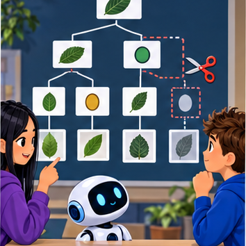
Builder name and experiment date:
Readiness for the connected explanation
Why does a cutoff with zero training errors still need validation on separate examples?
This week’s end goal
By the end, I can explain decision trees using a traced example and a stated limitation.
Student lesson · 2 of 17
Notice the evidence
PICTURE ENTRY
Notice → Predict → Explain
Begin with visible evidence; do not explain more than the picture and information support.
Name three visible details without interpreting them.
Predict the data, model, or evaluation decision being made.
Identify one hidden assumption that could change the result.
State what evidence would confirm or reject your prediction.
My prediction and supporting evidence:
A closer explanation
A decision tree asks a feature question and follows a branch to a prediction. A tree with one question has depth one and is sometimes called a stump. Unlike Week 8, where the two output labels were fixed in advance, this week we fit both the question and the label stored at each leaf.
Our six fictional training rows have two binary sensor flags available before prediction: near and tall. A value of 1 means that flag is present; 0 means absent. The reviewed scene label is separate. Each row represents a different trip on a familiar route, including rows with identical values. Similar readings can have different scene labels. These are teaching examples, not robot control instructions.
| Row | Near | Tall | Label |
|---|---|---|---|
| 1 | 1 | 0 | blocked |
| 2 | 1 | 1 | blocked |
| 3 | 1 | 0 | blocked |
| 4 | 0 | 1 | clear |
| 5 | 0 | 0 | clear |
| 6 | 0 | 1 | blocked |
Try near first and tall second. For each question, group the training rows by 0 and 1, then predict each group’s majority label; choose clear for tied label counts. Count all training mistakes and keep the first question if scores tie. Stop after one question. This is our stated classroom fitting procedure.
Student lesson · 3 of 17
See how it works
ML MECHANISM
Input → Model → Evidence
Trace the information, fitted behavior, and evaluation proof separately.
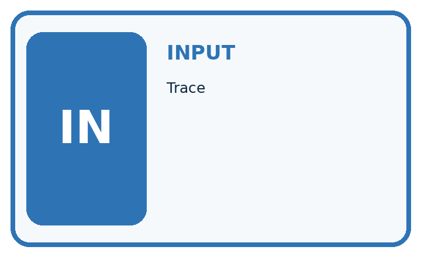
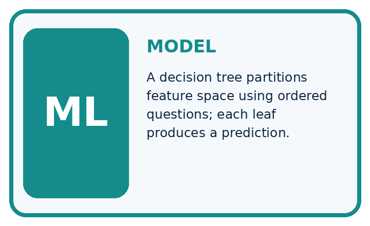
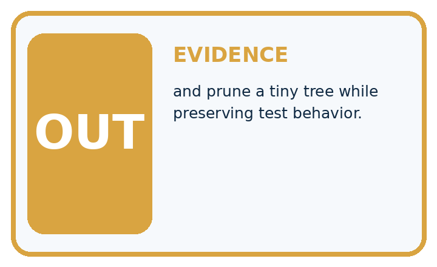
QUESTION Trace, draw, and prune a tiny tree while preserving test behavior.
MODEL IDEA A decision tree partitions feature space using ordered questions; each leaf produces a prediction.
PROOF NEEDED Use an unseen case, visible calculation, error analysis, and a stated limitation.
Draw a fresh data → model → prediction → evaluation trace:
A closer explanation
rows = [(1, 0, "blocked"), (1, 1, "blocked"),
(1, 0, "blocked"), (0, 1, "clear"),
(0, 0, "clear"), (0, 1, "blocked")]
def majority(labels):
if labels.count("blocked") > labels.count("clear"):
return "blocked"
return "clear"
best_errors = len(rows) + 1
for feature in [0, 1]:
leaves = {}
for value in [0, 1]:
labels = [row[2] for row in rows
if row[feature] == value]
leaves[value] = majority(labels)
errors = 0
for row in rows:
if leaves[row[feature]] != row[2]:
errors = errors + 1
print(feature, errors)
if errors < best_errors:
best_errors = errors
tree = (feature, leaves)
print(tree[0], tree[1][0], tree[1][1])Feature 0 is near; feature 1 is tall; row[2] is the label. Output is 0 1, then 1 2, then 0 clear blocked. Near makes one training mistake: near=0 contains two clear labels and one blocked, so that leaf predicts clear. Near=1 contains three blocked labels. Tall makes two mistakes because both its groups have a blocked majority.
The stored tree contains the chosen feature and its two learned leaves. The code assumes nonempty data, binary flags, allowed labels and examples on both branches of each candidate. An empty branch would need a declared fallback; this small example does not implement one. The score is total training mistakes, not an average giving small and large branches equal weight.
This is an explicitly limited depth-one learner. General tree algorithms can repeat split selection within branches and often use impurity criteria such as Gini. Our code does not implement that full procedure. Keeping the scope small lets you inspect every decision.
Connect the picture and the explanation
Point to the input, the deciding step and the result in this week’s visual. Explain the same step in ordinary words. A picture helps when you can say what each part represents.
Student lesson · 4 of 17
Compare the cases
EVALUATION DESIGN
Four Tests, Four Kinds of Evidence
A system is not understood until it survives more than one comfortable example.


NORMAL Expected data and expected behavior.
BOUNDARY Value close to a threshold, ambiguous label, or uncertain prediction.
MISSING Necessary field, label, source, or measurement is unavailable.
SHIFTED New lighting, species, device, subgroup, or time condition.
Which case most threatens today's claim, and why?
Change one thing in the pictured case
Change: The stored rule changes to visible_spots>2.
Prediction: M is now predicted healthy.
Reason: Changing >= to > moves the exact value 2 to the other branch.
Student lesson · 5 of 17
Words that unlock the idea
VOCABULARY
Words You Can Calculate and Defend
A definition matters when it lets you interpret a new dataset, model, or result.
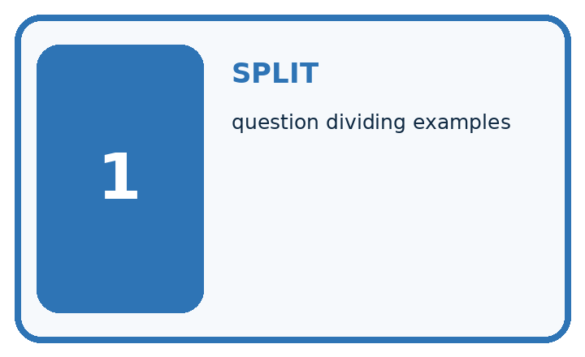
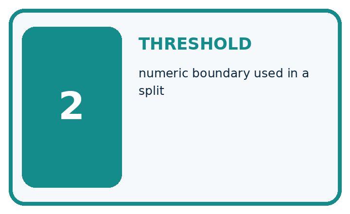
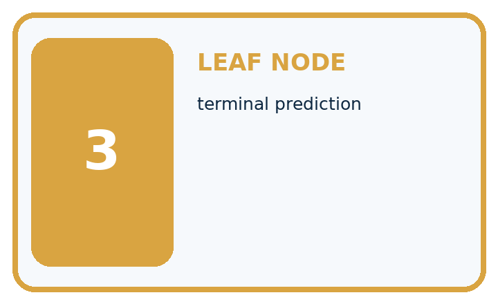
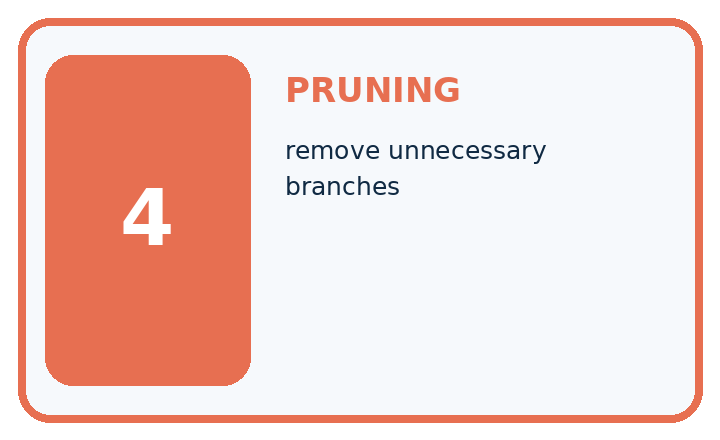
| Term | Precise meaning | My ML example |
|---|---|---|
| split | question dividing examples | |
| threshold | numeric boundary used in a split | |
| leaf node | terminal prediction | |
| pruning | remove unnecessary branches |
Repair the claim using a definition, calculation, or test record:
Words used in the closer explanation
| Word | Meaning |
|---|---|
| Root | The first question asked by a tree |
| Branch | A path selected by the answer to a question |
| Leaf | An endpoint that stores a prediction |
| Depth | The largest number of question steps from root to leaf |
Student lesson · 6 of 17
Follow a worked example
WORKED EVIDENCE
Reason Step by Step
Predict first. Then check each step. A correct answer without visible evidence cannot be audited.
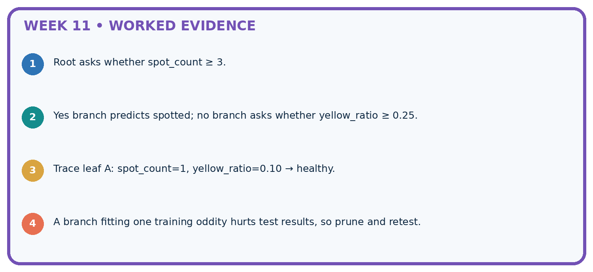
STEP 1 Root asks whether spot_count ≥ 3.
STEP 2 Yes branch predicts spotted; no branch asks whether yellow_ratio ≥ 0.25.
STEP 3 Trace leaf A: spot_count=1, yellow_ratio=0.10 → healthy.
STEP 4 A branch fitting one training oddity hurts test results, so prune and retest.
Recalculate, retrace, or restate the evidence independently:
A closer explanation
Two paths through the learned tree
Validation rows are (near=1,tall=1,blocked), (0,0,clear), (0,1,blocked), (1,0,clear). Follow only near: predictions are blocked, clear, clear, blocked. Two of four match. The training-majority baseline predicts blocked, since training has four blocked and two clear; it also matches two of four validation labels.
Keep the fitted root and leaves unchanged while scoring. Equal accuracy does not mean identical errors, and five correct training predictions out of six is not the validation result.
Learn from the worked case
Cover the result before checking it. Say what is given, choose the procedure, and follow one step at a time. Then uncover the result and explain your first mismatch. Ask why a step is allowed, not only what number it produces.
A pictorial worked case: Decision Trees
Trace a small fitted tree, including its exact boundary.
The facts we will use
Toy stored tree: if visible_spots>=2 predict spotted; otherwise healthy. Missing visible_spots requires review. Inputs L=1, M=2, N=None.
All inputs and outcomes in this worked example are invented classroom data; no real model run is claimed.

Read the picture one step at a time
Why this result follows
Read the picture in order. N lacks a count, so use review rather than inventing zero. The arrows show which recorded input or intermediate result each decision uses. Explain the deciding step aloud before checking the changed case; pointing to the final answer alone does not show how it follows.
What this example does not establish
Applying a stored tree is inference. Selecting a threshold from labelled training data is a separate fitting step.
Read the labelled picture: Which input distinguishes the original and changed tree? Point to the relevant step in the picture, then write the changed result and the rule or evidence that supports it.
Change one thing: The stored rule changes to visible_spots>2. Predict the result before checking the explanation. What remains the same?
Student lesson · 7 of 17
Find and repair a mistake
ERROR DETECTIVE
Compare → Diagnose → Repair
Do not patch the answer. Find the earliest unsupported assumption, data problem, or experiment error.
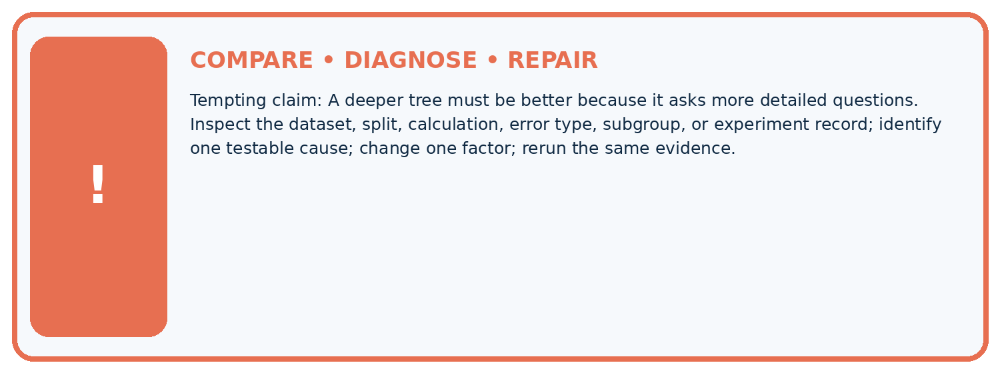
| Evidence record | Expected | Actual | Likely cause / next test |
|---|---|---|---|
| normal case | passes | ||
| boundary case | defined behavior | ||
| missing case | safe fallback | ||
| shifted case | measured limit |
Diagnose one cause and name the cleanest next experiment:
A closer explanation
Record the two candidate questions, branch label counts, total errors, tie rules, depth limit, stored tree and validation predictions. Retain all rows, including the blocked example in the near=0 branch; removing a disagreement would change the evidence.
Our tree uses a single feature because that question scored better under this procedure. This neither establishes that near causes blockage nor that tall is useless in every dataset. Next week a nearest-neighbour method will predict by comparing examples instead of following learned questions.
Student lesson · 8 of 17
Practise together
ML STUDIO
Specify Before You Run
A trustworthy result can be reproduced from the recorded data, code, settings, and evaluation rule.

Experiment record
QUESTION + intended use + success threshold
DATA version + grouped split + leakage check
CODE/preprocessing + features + model + settings + seed
METRICS + positive class + units + denominators
PREDICTIONS + errors + subgroup slices + limitations
HUMAN reviewer + release, revise, limit, or stop decision
Write the minimum record needed to reproduce today's result:
A closer explanation
Do not assume near=1 must always predict blocked. If a new training set gives that branch a clear majority, this same learner will store clear there. A feature name is not the answer. Use the training labels belonging to that branch.
Adding more questions can fit finer training details but does not guarantee better new-case performance. Record any depth choice made during development, and keep final test data separate. A leaf majority describes this training group; it is not a promise about every future example.
Practise with less help: Verify the candidate scores
Use workbook W2 for the connected example “Fitting a decision tree”. First fill the input and rule boxes. Try the middle steps before asking for a hint. After a hint, try the next step yourself.
| Plan | Do | Check |
|---|---|---|
| What is given? Which rule or procedure applies? | Record each intermediate step. | Does the result follow? What remains unknown? |
Explain your trace to a partner. Your partner points to one step to check. Swap roles on the next case. Each person writes their own explanation.
Check your reasoning
Use the worked case for Fitting a decision tree. Proposed explanation: “A near branch must predict blocked”. Decide whether this explanation is supported. Point to the step or supplied fact that decides; explain your repair if needed.
Answer on your own before discussion. If you are unsure, say which step you need help with.
Explain the picture
Which input distinguishes the original and changed tree? Point to the relevant step in the picture, then write the changed result and the rule or evidence that supports it.
This is supported practice. Keep the separately named independent case for an attempt before feedback.
Student lesson · 9 of 17
Run the investigation
EVIDENCE LAB
Predict → Run → Calculate → Interpret
Keep the test conditions fixed, record every result, and change only one planned factor.
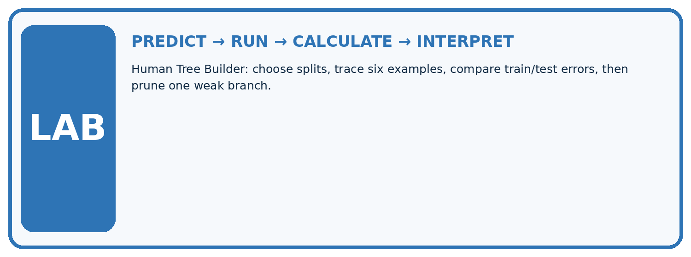
1. Write the hypothesis and expected evidence before running.
2. Human Tree Builder: choose splits, trace six examples, compare train/test errors, then prune one weak branch.
3. Run one normal, one boundary, one missing, and one shifted case.
4. Calculate the metric from raw counts or row-level errors.
5. Interpret what changed, what did not, and what remains unsafe or unknown.
| Case | Prediction | Actual | Calculation / evidence | Meaning / next test |
|---|---|---|---|---|
| Normal | ||||
| Boundary | ||||
| Missing | ||||
| Shifted |
Plan → try → check
Before trying: what do I expect, and why? While trying: which step could first go wrong? Afterwards: what did I actually observe, and what should change? Keep “not run” if you only traced the procedure.
Student lesson · 10 of 17
Build your understanding
MASTERY
From Knowing the Word to Owning the Idea
Move upward only when you can produce evidence without copying the example.

DEFINE Use all four terms precisely: split, threshold, leaf node, pruning.
CALCULATE Reproduce the worked evidence with units and denominator.
TRACE Explain the data, code or decision path.
DIAGNOSE A deeper tree must be better because it asks more detailed questions.
TRANSFER Solve a fresh dataset or model case.
IMPROVE Change one cause and rerun fixed evidence.
DEFEND State intended use, metric, limitation, and human responsibility.
Student lesson · 11 of 17
Connect your project
CUMULATIVE PROJECT
Responsible Plant Classifier
Every week adds one reviewable artifact to the same evidence-based capstone.
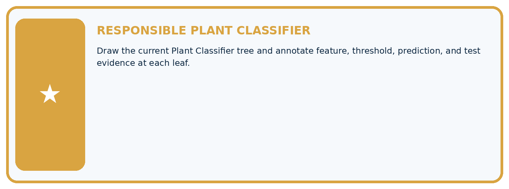
Which requirement or risk does this artifact address?
Which dataset, split, code, and metric version does it use?
What normal and shifted cases were tested?
What remains uncertain or weak?
What decision still belongs to a teacher or qualified human?
My evidence-linked project decision:
Evidence for your project
For your Responsible Plant Classifier, save the input, procedure, observed result and limitation of this check. Label this worked example as practice; use a different, previously unreviewed case when checking independent understanding.
Student lesson · 12 of 17
Show what you know
INDEPENDENT PROOF
Explain • Calculate • Transfer • Defend
Complete this with a fresh case after guided practice and compare it with the mastery criteria.
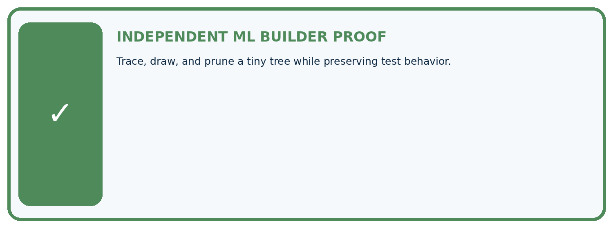
□ Define the task, feature/target roles, and intended-use boundary.
□ Show the calculation, code trace, or experiment record.
□ Test a normal case and one revealing boundary, missing, or shifted case.
□ Diagnose one failure without changing several factors at once.
□ Name a limitation, fairness concern, and the human-review action.
Independent evidence and defense:
My level: □ Not yet □ With one hint □ Independently □ I can teach and defend it
Student lesson · 13 of 17
Study a complete case
Week 11 Worked case
Use the supplied details to practise the weekly concept before attempting the independent question. This case extends the illustrated lesson.
The situation
A supplied tree predicts spotted for spot_count>=3, otherwise healthy.
The question
Trace 2,3,4 and state boundary.
Worked explanation
Healthy, spotted, spotted. Three is included. This supplied rule does not show an optimal learned threshold.
Explain it in your own words
Which detail supports the answer, and why does it matter?
Trace the supplied case visually
Trace the inclusive tree threshold
| Evidence or stage | Value or result |
|---|---|
| 2 spots | Below 3 → healthy |
| 3 spots | At least 3 → spotted |
| 4 spots | At least 3 → spotted |
A supplied tree predicts spotted for spot_count>=3, otherwise healthy.
Trace 2,3,4 and state boundary.
Healthy, spotted, spotted. Three is included. This supplied rule does not show an optimal learned threshold.
Student lesson · 14 of 17
Try a new case independently
Independent case: Changed independent case
A stored fitted rule says spots >=5 predicts spotted; otherwise healthy. Trace4,5,6 and a missing count. Policy: missing count requires review. Can test labels be used to choose this cutoff?
Attempt this case before feedback. Record any help. Earlier examples below are further practice; a case already practised with feedback cannot establish fresh transfer.
Week 11 Independent application
Close the worked explanation. Apply the idea to this different question without copying.
A tree predicts fern when leaf_width_cm <= 3 and grass otherwise. Trace widths 2, 3 and 4. Which case checks the boundary?
My answer, with a trace, calculation or supporting evidence
Create and test
Change one relevant detail. Predict the result before testing. Include a boundary or missing-information case when it helps reveal a limit.
My changed input and expected result
Connect to your project
Draw the current Plant Classifier tree and annotate feature, threshold, prediction, and test evidence at each leaf.
The evidence I will keep
Your teacher has the independent answer and scoring criteria. Complete the matching workbook week to keep your practice evidence together.
Transfer practice from the original programme
Rule: if spots>=4 predict spotted, otherwise healthy. Trace 3,4,5 and missing. Does applying this rule demonstrate that training found the threshold?
Use feedback to improve
Attempt the independent case before hints. Record whether you worked alone, used a hint or followed a model. After feedback, fix the first unsupported step and explain why it changed. A later check uses a changed case, not a copied answer.
Student lesson · 15 of 17
Your lesson route
Start with this question: Trace a small fitted tree, including its exact boundary.
| By the end, I can | How I will show it |
|---|---|
| Fit a root question and leaf predictions from training examples | Explain the deciding step, show a trace or test, and state one limit. |
| Trace a new example through the learned tree | Explain the deciding step, show a trace or test, and state one limit. |
| Compare a shallow tree with a baseline and state its limits | Explain the deciding step, show a trace or test, and state one limit. |
Remember → watch and explain → try with help → investigate → try independently → keep project evidence. Your teacher may spread this lesson across several classes.
Keep your first prediction. Compare it with what the evidence shows and explain any change.
Student lesson · 16 of 17
Finish and return
Close your notes. Explain this goal in your own words: Fit a root question and leaf predictions from training examples
If you are unsure, return to the worked picture and explain one arrow. If you are ready, change an input or assumption and justify your prediction.
Save your workbook evidence. At the next review, try a different case before opening your old answer.
Student lesson · 17 of 17
Supported practice, repair and portfolio
Use this supported practice once, in the browser or on paper. Keep the reserved independent assessment for a separate first attempt before teacher feedback.
Trace a small fitted tree, including its exact boundary.
Practice 1: explain the deciding evidence
Which labelled step matches this detail? N lacks a count, so use review rather than inventing zero.
1. Read boundary
2. Read first branch
3. Stop missing path
Hint if needed: Read the steps in the pictorial case. Match the supplied detail to the stage that performs or records it.
After your attempt, compare with the supported explanation: Stop missing path N lacks a count, so use review rather than inventing zero. Read the picture in order. N lacks a count, so use review rather than inventing zero. The arrows show which recorded input or intermediate result each decision uses. Explain the deciding step aloud before checking the changed case; pointing to the final answer alone does not show how it follows.
Practice 2: explain the deciding evidence
Changed-case practice: The stored rule changes to visible_spots>2. Which conclusion is supported by the supplied facts?
1. We can decide the result without examining the changed input or the procedure.
2. This one example guarantees correct results for every future input.
3. M is now predicted healthy.
Hint if needed: Use the changed condition and the deciding step in the pictorial trace. The answer must say what follows from those facts.
After your attempt, compare with the supported explanation: M is now predicted healthy. Changing >= to > moves the exact value 2 to the other branch.
Repair a missing building block
Review Baselines First (ai-4/10). Goal: Fit a majority label baseline using training labels only. Short practice: Can the candidate’s training accuracy replace this validation comparison? Point to the relevant step in the picture, then write the changed result and the rule or evidence that supports it.. Return to this week and explain what you changed.
Review Leakage (ai-4/8). Goal: Choose a split unit that matches the intended prediction claim. Short practice: How many independently new plant identities are in the original test? Point to the relevant step in the picture, then write the changed result and the rule or evidence that supports it.. Return to this week and explain what you changed.
Review Inspect Before Modeling (ai-4/5). Goal: Inspect row meaning missing values and repeated records. Short practice: Which original information should the inspection log preserve? Point to the relevant step in the picture, then write the changed result and the rule or evidence that supports it.. Return to this week and explain what you changed.
Predict, run and debug
The browser lab lets you edit the supported Python examples already included in this lesson. Predict first, run, inspect the actual output or error, change one input, then run again. Keep code, predictions, actual results and a reasoned revision together. On paper, label your result as a trace rather than an execution.
Keep your completed work
Use Download completed work in the hosted lesson to export your answers, reflections, practice feedback and code-run evidence. Open the HTML copy to read or print it. Drafts stay in this browser when storage is available; clear drafts on a shared device.